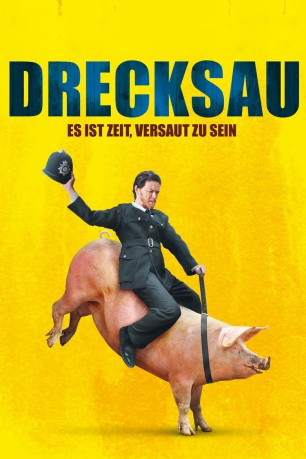

#9096 Drecksau
Alternativ: Filth
Auszeichnungen: 1 BAFTA-Awards gewonnen
 
 IMDB-Wertung: 7.1 / 10
IMDB-Wertung: 7.1 / 10  Metascore: 0
Metascore: 0 
Detective Sergeant Bruce Robertson ist depressiv, intrigant, versoffen und korrupt, schnupft Kokain und vögelt die Gattin seines Kollegen. Was soll die Polizei von Glasgow bloß mit einer Drecksau wie ihm machen? Befördern! Zumindest träumt er davon. Denn wenn er den jüngsten Mordfall löst und dadurch die Karriereleiter hochfällt, kehrt seine Frau zu ihm zurück. Bestimmt. Denkt er. Doch ist das Leben tatsächlich so leicht? Und ist Bruce wirklich der coole Typ, für den er sich hält? Die Antwort kennt nicht mal sein Psychiater.
Jahr: 2013
Dauer: 97 Minuten
FSK: 16
Land: England Studio: Ascot Elite Entertainment GroupTonspuren: DTS - ,
Untertitel: Deutsch,
Auflösung: 1080p (1920x808) Größe: 9953 MB
Genre: Drama, Komödie, Krimi
Regisseur: Jon S. Baird
Drehbuch: Paco Wong
Soundtrack: Clint Mansell
Darsteller:
 James McAvoy als Bruce
James McAvoy als Bruce Jamie Bell als Lennox
Jamie Bell als Lennox Eddie Marsan als Bladesey
Eddie Marsan als Bladesey Imogen Poots als Drummond
Imogen Poots als Drummond Brian McCardie als Gillman
Brian McCardie als Gillman Emun Elliott als Inglis
Emun Elliott als Inglis Gary Lewis als Gus
Gary Lewis als Gus John Sessions als Toal
John Sessions als Toal- Shauna Macdonald als Carole
 Jim Broadbent als Dr. Rossi
Jim Broadbent als Dr. Rossi Joanne Froggatt als Mary
Joanne Froggatt als Mary Kate Dickie als Chrissie
Kate Dickie als Chrissie Martin Compston als Gorman
Martin Compston als Gorman Iain De Caestecker als Ocky
Iain De Caestecker als Ocky Shirley Henderson als Bunty
Shirley Henderson als Bunty- Joy McAvoy als Estelle
 Pollyanna McIntosh als Size Queen
Pollyanna McIntosh als Size Queen- Zack Niizato als Japanese Student
- Robin Laing als Rent Boy
 Ron Donachie als Hector
Ron Donachie als Hector- Tracy Ann Oberman als Diana
 Mitchell Mullen als Bobby
Mitchell Mullen als Bobby- Jonathan Watson als Uniformed Policeman
 David Soul als Punter
David Soul als Punter- Lauren Maddox als Posh Lady
- Natasha O'Keeffe als Anna
- Neil D'Souza als Anil
- Trudie Styler als Madame R Zen Ficken
- Sofie Gällerspång als Aircraft passenger (uncredited)
- Christian Kinell als Airplane Passenger (uncredited)
- Jordan Young als Lexo
- Bobby Rainsbury als Stephanie
- Michael Moreland als Tramp
- Therese Bradley als Madam Maisie
- Franziska Altmeyer als Hamburg Carole
- Jake Wilson als Little Davie
- Luke MacDonald als Euan
- Jodie Mccallum als Dealer's Girlfriend
- Chris Young als Drunken Santa Claus
- Chris Cameron als Skanky Dealer
- Chidi Chickwe als Steven
- Sanjeev Kohli als Sunil
- Vanda Dadras als Air Stewardess
- Jamie Wallace als Obnoxious Son
- Megan Finn als Stacey
- Colin Healy als Colin (uncredited)
- Emma Bryant als Dancer
- China Soul als Car Singer
- Craig Garner als Dwarf (uncredited)
- Gregor Gillespie als Naked Police Officer (uncredited)
Datei: X:\2013(A-F)\Drecksau (2013, FSK16, 1920x808).mkv seit 19.07.2018
Festplatte: HD 2012(N-Z)-2013(A-H)
 Es gibt insgesamt 127 Filme in der Gruppe '2013(A-F)'
Es gibt insgesamt 127 Filme in der Gruppe '2013(A-F)'